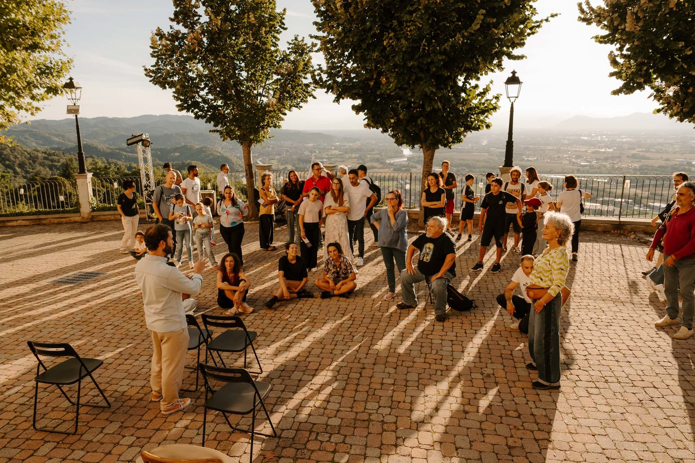

Il festival
Cos’è il Moon Festival
Il Moon Festival: teatro, arte e incontri a San Raffaele Cimena.
- Dove
- San Raffaele Cimena Alto · Torino, Italia
- Chi
- Un progetto di Dnart APS
- Quando
- Sesta edizione · 3–5 settembre 2027
- Ingresso
- Libero
 © Stefano Druetta · Moon Festival, 3ª edizione
© Stefano Druetta · Moon Festival, 3ª edizioneCos’è il Moon Festival
Un borgo. Un altro mondo.
Moon Festival è gratuito, queer-friendly, accessibile, sostenibile e pieno di umanità. Una volta all’anno San Raffaele Cimena cambia funzione: le strade diventano percorsi, i cortili diventano scene.
Approfondisci
© Martino Zattarin · Moon Festival, 4ª edizioneNote di regia · 2026
ATTIDICURA
Nel 2026 il Moon Festival attraversa ATTIDICURA: una domanda semplice, ma non comoda. Come ci prendiamo cura di noi, delle persone che incontriamo e del pianeta che ci ospita?
Approfondisci © Martino Zattarin · Moon Festival, 4ª edizione
© Martino Zattarin · Moon Festival, 4ª edizioneChi siamo
Un’alleanza nata nel 2022.
Il Moon Festival nasce nel 2022 dall’unione tra Dnart, il Comune e la Pro Loco di San Raffaele Cimena: un progetto culturale radicato nel territorio, capace di attivare comunità.
Approfondisci © Ilum collettivo · Moon Festival, 5ª edizione
© Ilum collettivo · Moon Festival, 5ª edizioneTerritorio
Tra la Collina Torinese e il Po.
San Raffaele Alto, la pianura chivassese, i sentieri della Collina Torinese e il Parco del Po piemontese: il territorio della Riserva della Biosfera Collina Po MAB UNESCO.
Approfondisci © Stefano Druetta · Moon Festival, 3ª edizione
© Stefano Druetta · Moon Festival, 3ª edizionePartner
Insieme si accende di più.
Il Comune di San Raffaele Cimena è partner strategico e imprescindibile nell’organizzazione; la Pro Loco sostiene la realizzazione con il suo radicamento locale.
Approfondisci